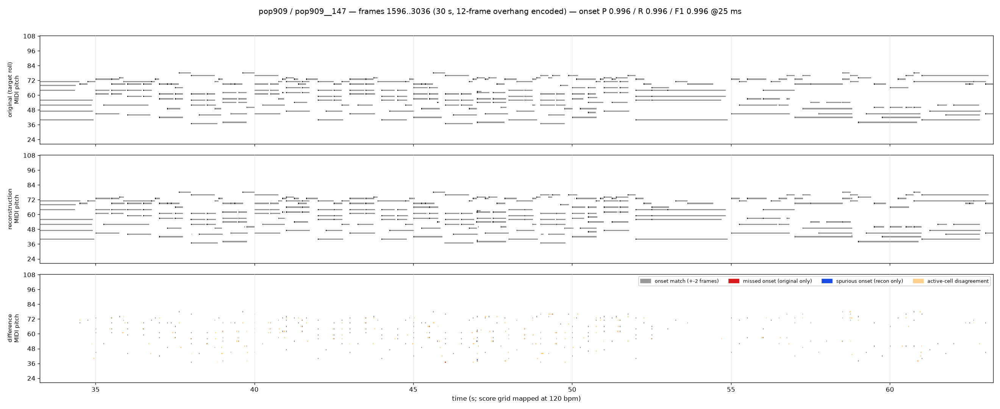
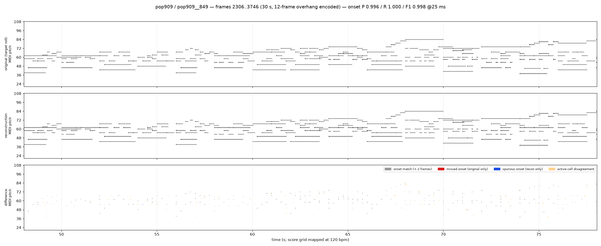
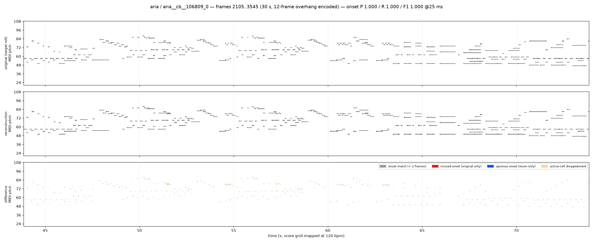
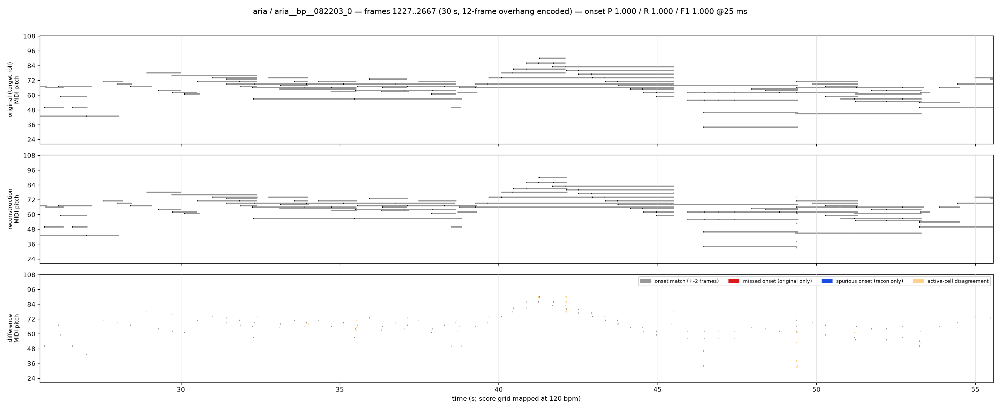
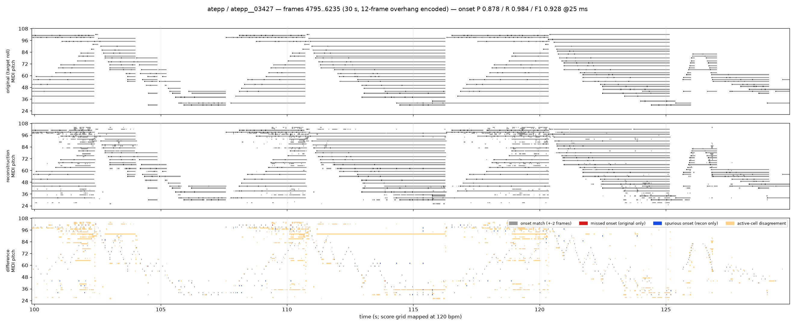
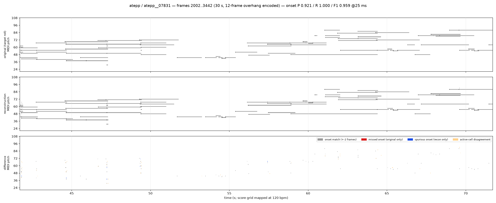

Needs internet: the MIDI players and the soundfont are loaded from a CDN. Serve this directory over HTTP (the players cannot fetch .mid over file://).
Checkpoint /home/mingyang/all_models/unified_symbolic_rep/stage1_local_encoder/s1a_v0/best.pt (step 26000) — 1440-frame segment (30 s) per piece from 25% of the piece, encoded with a 12-frame overhang per side that is dropped before decoding; both sides decoded to notes with the same rule (peak-picked onsets, +-2 frames, probability >= 0.8).
notes 274 orig / 274 recon onset@25ms P 0.996 R 0.996 F1 0.996 F1@10ms 0.993 active F1 0.986 vel exact 0.982 mean |dt| 0.13 ms

notes 225 orig / 226 recon onset@25ms P 0.996 R 1.000 F1 0.998 F1@10ms 0.998 active F1 0.990 vel exact 1.000 mean |dt| 0.08 ms

notes 286 orig / 286 recon onset@25ms P 1.000 R 1.000 F1 1.000 F1@10ms 0.997 active F1 0.974 vel exact 0.993 mean |dt| 0.50 ms

notes 120 orig / 120 recon onset@25ms P 1.000 R 1.000 F1 1.000 F1@10ms 1.000 active F1 0.997 vel exact 0.992 mean |dt| 0.56 ms

notes 491 orig / 550 recon onset@25ms P 0.878 R 0.984 F1 0.928 F1@10ms 0.915 active F1 0.918 vel exact 0.855 mean |dt| 1.37 ms

notes 82 orig / 89 recon onset@25ms P 0.921 R 1.000 F1 0.959 F1@10ms 0.924 active F1 0.996 vel exact 0.963 mean |dt| 1.13 ms
